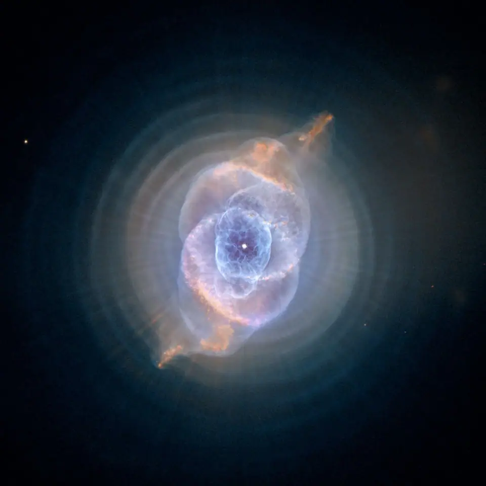

Science news ·
Scientists Have Figured Out When And How Our Sun Will Die, And It’s Going to Be Epic
What will our Sun look like after it dies? Scientists have made new predictions about what the end will look like for our Solar System, and when that will happen. And humans won’t be around to see the final act.
Previously, astronomers thought it would turn into a planetary nebula, a luminous bubble of gas and dust, until evidence suggested it would have to be a fair bit more massive.
Now an international team of astronomers have flipped it again, and found that a planetary nebula is indeed the most likely Solar corpse.
The Sun is about 4.6 billion years old – gauged on the age of other objects in the Solar System that formed around the same time. And, based on observations of other stars, astronomers predict it will reach the end of its life in about another 10 billion years.
There are other things that will happen along the way, of course. In about 5 billion years, it’s due to turn into a red giant. The core of the star will shrink, but its outer layers will expand out to the orbit of Mars, engulfing our planet in the process. If it’s even still there.
One thing is certain: by that time, we most certainly won’t be around. In fact, humanity only has about one billion years left unless we find a way off this rock. That’s because the Sun is increasing in brightness by about 10 percent every billion years.
That doesn’t sound like much, but that increase in brightness will end life on Earth. Our oceans will evaporate, and the surface will become too hot for water to form. We’ll be about as kaput as you can get.
It’s what comes after the red giant that has proven difficult to pin down. Several previous studies have found that, in order for a bright planetary nebula to form, the initial star needs to have been up to twice as massive as the Sun.
Now an international team of astronomers has used computer modelling to determine that, like 90 percent of other stars, our Sun is most likely to shrink down from a red giant to become a white dwarf and then end as a planetary nebula.
“When a star dies it ejects a mass of gas and dust – known as its envelope – into space. The envelope can be as much as half the star’s mass. This reveals the star’s core, which by this point in the star’s life is running out of fuel, eventually turning off and before finally dying,” explained astrophysicist Albert Zijlstra from the University of Manchester in the UK, one of the authors on the new paper.
“It is only then the hot core makes the ejected envelope shine brightly for around 10,000 years – a brief period in astronomy. This is what makes the planetary nebula visible. Some are so bright that they can be seen from extremely large distances measuring tens of millions of light years, where the star itself would have been much too faint to see.”
The data model that the team created actually predicts the life cycle of different kinds of stars, to figure out the brightness of the planetary nebula associated with different star masses.
Planetary nebulae are relatively common throughout the observable Universe, with famous ones including the Helix Nebula, the Cat’s Eye Nebula, the Ring Nebula and the Bubble Nebula.

They’re named planetary nebulae not because they actually have anything to do with planets, but because, when the first ones were discovered by William Herschel in the late 18th century, they were similar in appearance to planets through the telescopes of the time.
Around 25 years ago, astronomers noticed something peculiar: the brightest planetary nebulae in other galaxies all have about the same level of brightness. This means that, theoretically at least, by looking at the planetary nebulae in other galaxies, astronomers can calculate how far away they are.
The data showed that this was correct, but the models contradicted it, which has been vexing scientists ever since the discovery was made.
“Old, low mass stars should make much fainter planetary nebulae than young, more massive stars. This has become a source of conflict for the past for 25 years.
“The data said you could get bright planetary nebulae from low mass stars like the sun, the models said that was not possible, anything less than about twice the mass of the sun would give a planetary nebula too faint to see.”
Now the new models have solved this problem by showing that the Sun is about the lower limit of mass for a star that can produce a visible nebula.
Even a star with a mass less than 1.1 times that of the Sun won’t produce visible nebulae. Bigger stars up to 3 times more massive than the Sun, on the other hand, will produce the brighter nebulae.
For all the other stars in between, the predicted brightness is very close to what has been observed.
“This is a nice result,” Zijlstra said. “Not only do we now have a way to measure the presence of stars of ages a few billion years in distant galaxies, which is a range that is remarkably difficult to measure, we even have found out what the Sun will do when it dies!”
The research has been published in the journal Nature Astronomy.
Migrated from the AUASS website archive as published, with the formatting tidied.